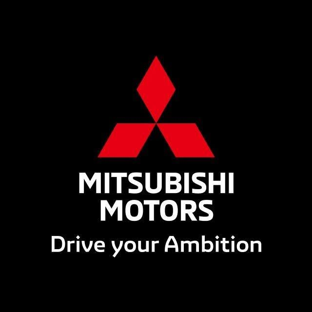
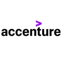

My tech journey
Mechanical Engineering → Cloud ERP Implementation → SAP Functional (FI/CO) Consulting
B.Eng · Honors
Chulalongkorn
Mechanical Engineering · GPA 3.40
View education →
Internship · SAP Functional User · MM/FI · Hardware DesignMitsubishi Motors
FPDU assist device · PHEV line · Best Achievement Award
View project →
Project · Software EV Implementation · Hardware Integration
MUVMI
EV regen-brake software & ergonomics
View project →
Senior Project · AI (DDPG) · Coding Python
CU Smart Mobility
LiDAR autonomous driving (DDPG) research center
View project → ERP Consultant · 4 Projects (End-to-End) · 2023–2026
ERP Consultant · 4 Projects (End-to-End) · 2023–2026
Learn Balance
Full-time · 4 live XeerSoft go-lives · 3-branch school group
View 4 projects →
SAP Functional Consultant · FI/CO · 2026Accenture
Full-time · SAP S/4HANA FI/CO delivery
View SAP FI Tax scope →